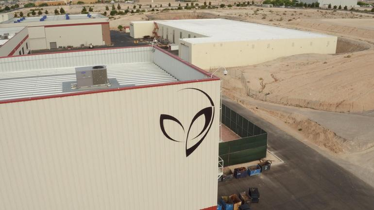

As I have repeatedly stated, the United States government has known about extraterrestrials for decades. They have established a very secret organization known as MAJestic to study this matter. This organization is used to interact with extraterrestrials and extract technologies from them. This organization is completely removed from the US government and operates secretively within it. It’s sort of like bubbles of water floating within oil.
This article serves as a secondary source of validation of my disclosure of the existence of MAJestic.
- MAJestic exists.
- It operates outside of government control.
- All classifications within it are unacknowledged special access programs. (USAP).
- Elected officials , politicians, and bureaucrats are not permitted access ever.
- It is involved in all things extraterrestrial.
- It is well established and has been in operation for decades.
Executive Summary about this “Leak”.
The world “leak” carries a lot of baggage with it. It’s kind of silly, don’t you know. All that went on is a United Sates Admiral, Tom Wilson, wanted to inquire about certain R&D programs that some of his subordinates had participated in.
He did not care to know all the details, just an executive overview. He felt that he had to, at the bare minimum, understand their involvement in R&D support efforts that lie within deep black special access programs.
Thus…
- Notes have been made public of a conversation that allegedly occurred on Oct. 16th 2002 with US Admiral Tom Wilson.
- At that time, US Admiral Tom Wilson was Deputy Director of the DIA & Vice Director for Intelligence [VJ2] for the Joint Chiefs of Staff.
- Tom Wilson admits he was denied access to a SAP involving reverse engineering an alien UFO craft.
- If true, this incident shows that high-ranking officials are excluded from SAPs & USAPs by an oversight committee.
- The top military/aerospace corporations can reject anyone without ‘need to know.’
- Highly advanced technology is in private hands with no public oversight.
The Admiral Wilson leak refers to notes where Wilson, a senior official, admits he was denied access to a Special Access Program where they were reverse engineering vehicles that were not of human fabrication.
Admiral Wilson
Admiral Wilson is a military officer with a long and distinguished career.
- He was a Real Admiral (upper class).
- He served as the Deputy Director, and later the Director, of the DIA (Defense Intelligence Agency).
- He also served as the Vice Director for Intelligence for the Joint Chiefs of Staff, a position known as VJ2 or J2.
The Notes and their history
On April 19th 2019, researcher Canadian Grant Cameron uploaded to the internet 15 pages of documents.
About Mr. Grant Cameron Grant Cameron is the recipient of the Leeds Conference International Researcher of the Year and the UFO Congress Researcher of the Year. He became involved in Ufology as the Vietnam War ended in May 1975 with personal sightings of a UFO type object which locally became known as Charlie Red Star. - Grant Camerion Bio - Modern Knowledge
These documents are allegedly the notes taken by Dr. Eric Davis on October 16th 2002.
These notes record the conversation between Admiral Wilson and Willard Miller, a US Naval Reserve Commander and top military advisor to Steven Greer of The Disclosure Project.
Greer founded the Center for the Study of Extra-Terrestrial Intelligence (CSETI) in 1990 to create a diplomatic and research-based initiative to contact extraterrestrial civilizations. In 1993, he founded the Disclosure Project, a nonprofit research project, whose goal is to disclose to the public the government's alleged knowledge... - Steven M. Greer - Wikipedia
In the exchange, the admiral admits he was denied access to a SAP (Special Access Program) or more accurately a (U)SAP (Unacknowledged Special Access Program).

This is because, despite his rank and position, he still didn’t have need to know.
This particular (U)SAP lies wholly outside the purview of the United States government, the military and the entire bureaucracy that supports it. It is in the careful, and well-trained hands of a number of top military aerospace corporations.
In this instance, the (U) SAP involves the reverse engineering of UFO/alien craft technology.

The Admiral Wilson Leak Documents
The notes were taken by Dr. Eric Davis, a scientist who was a member of NIDS (National Institute for Discovery Sciences).
The National Institute for Discovery Science, known also as NIDS, was founded by Robert Bigelow serving as a way to channel funds into the scientific study of paranormal phenomena. The NIDS performed research in the area of cattle mutilation and black triangle reports. The NIDSci bought Skinwalker Ranch after journalist George Knapp first wrote about it in 1996, and Deputy Administrator Colm Kelleher led the investigation for a number of years. - National Institute for Discovery Science - Wikipedia
NIDS is owned by aerospace billionaire Robert Bigelow (who has openly talked about UFOS and aliens for decades). NIDS conducted scientific research into UFO-related phenomena such as the mystery of the black triangles.
Additionally, Davis is an associate of Dr. Hal Puthoff, the famous developer of remote viewing in the US in the 1970s.
Hal Puthoff Dr Hal Puthoff is one of the original SRI (Stanford Research Institute) team members and creators of the Remote Viewing program, contributor to the development or remote viewing and Ingo Swann’s Controlled Remote Viewing (CRV). - Hal Puthoff - Remote Viewing information and resources
Exopolitical researcher Dr. Michael Salla contacted Davis to verify whether the leak was genuine and confirm whether he had indeed written the notes.
Davis replied that he had no comment.
Taken in total, this is a clue that the content is genuine, since Davis refused to call them a hoax.
The full 15 pages of the Admiral Wilson leak documents are available here. They are worth reading in full.
What the Documents Reveal
The documents record a conversation from 2002 where Admiral Wilson, with hindsight, was referring back to a period from April-June in 1997.
They start with Admiral Wilson confirming that he met with Greer, Miller, Edgar Mitchell (Apollo 14 astronaut and founder of Institute of Noetic Sciences), Admiral Mike Crawford and General Pat Hughes (who was Wilson’s boss) in a Pentagon conference room.
The notes state that Wilson and Miller talked privately for 2 hours on UFOs, MJ-12, Roswell, crashed UFOs, alien bodies, etc.
In the notes, “TW” stand for Tom Wilson and “EWD” stands for “Eric Davis”:
TW: Confirmed Greer/Miller/Mitchell gave talk in Pentagon Conference room. Adm Mike Crawford, Gen. Pat Hughes (Hughes his boss) were present (others too.) Date April “97. (Ed Mitchell said 4/9/947.) After group broke up, Miller/Wilson talked (privately) 2 hours on UFOs, MJ-12, Roswell, crashed UFOs/alien bodies, etc. TW intrigued – knew about intelligence on US mil/intel UFO close encounters – and foreign gov’t encounters. Seen records. Told Miller.
TW: Yes, Miller asked the question on MJ-12/UFO cabal – crashed UFO. Confirmed he called Miller ca. late June ’97 and told that he/Miller was right – there is such an organization in existence.
Davis notes that Wilson was furious that Miller had betrayed his confidence and shared the conversation with others (according to Davis, Miller only told Greer and Mitchell). Wilson goes on to state that he started investigating whether there was a secretive group hiding UFO secrets:
EWD: Okay then, what happened in April-June ’97?
TW: After parting with Miller (week later, he thinks) – I made calls, knocked on a few doors, talked to people – went on for 45 days (thereabouts) on and off – Suggestion came from Ward (Gen. M. Ward) to go through the records groups files (like an index system) in OUSDAT (Office of the Under Secretary of Defense for Acquisition and Technology) – Ran into Bill Perry in May ’97 – talked about this quietly – he suggested the same thing – They told me of a special projects record group not belonging to usual SAP – a special subset of the unacknowledged/carve-outs/waived programs – not belonging to usual SAP divisions as organized in ’94 by Perry himself – set apart from rest but buried/covered by conventional SAPs
Admiral Wilson Leak Docs Mention Existence of MJ-12 and (U)SAPs
In just the first few pages of this leak, Wilson has admitted both that MJ-12 exists (or existed) and that advanced technology projects/UFOs are hidden within (U)SAPs.
In the second quoted section above, Wilson states he spent about 45 days looking into the matter, and in the first quoted section above, he states that he concluded that MJ-12 did exist.
He also reveals how he learnt that (U)SAPs exist, as a special subset of SAPs which are “unacknowledged/carve-outs/waived”, something which various whistleblowers have exposed over the years.


Ufologist Richard Dolan, who wrote his analysis of the Admiral Wilson leak here, coined the phrase “Breakaway Civilization”.
The term “Breakaway Civilization” is used to describe the state of affairs whereby a private military aerospace contractor is in possession of extraordinarily advanced technology and is able to speed light years ahead of what the public thinks is possible.
In short to literally create another civilization. Which is to say, to “breakaway” from the old civilization and evolve. Leaving the old civilization behind, like the discarded skin of a snake that slithers away.
(U)SAP’s reside inside SAP’s.
Michael Salla points out how (U)SAPs are often hidden inside SAPs. He also has shown a confidential NSA document leaked by Snowden to prove the point:
“The method of hiding the most highly classified programs behind less classified ones was verified in one of the NSA documents leaked by Edward Snowden called Sentry Eagle. It graphically depicted how Exceptionally Compartmented Information (ECI – an Intelligence Community classification similar to an Unacknowledged SAP used by the Pentagon) would be hidden behind a Non-ECI Program (similar classification status to a conventional SAP).”
Wilson Meets the (U)SAP Gatekeepers.
There are more fascinating details to the story, however to keep this brief, it gets really interesting when Davis starts asking Wilson what he found.
Wilson at first is tight-lipped:
EWD: … so what SAP compartment did you find in? TW: Core secret – won’t say EWD: Code name? TW: Again won’t say – core secret.
Code name is MAJestic.
EWD: Who was the project contractor or USG agency that runs the program? TW: An aerospace technology contractor – one of the top ones in US. EWD: Who? TW: Core secret – can’t tell. EWD: Defense contractor? TW: Yes, the best one of them. EWD: Intelligence too? TW: In their corporate portfolio. EWD: Give a hint? TW: Sorry no.
People have guessed that it could be Northrop Grumman or Boeing, although Lockheed Martin is also likely, given the notoriety of its Skunkworks program.
We do not know which particular sub-program (U)SAP is involved in this instance. However, just about all American aerospace companies participate in MAJestic operations to some extent.
Wilson goes on to say how he called them.
He demanded to be “read in” or informed about the project.
It was a surprise to him, and he was given the access denied treatment:
TW: (End of May ’97) Made three calls to the program manager – one of them conference call with security director and corporate attorney. Confusion on their part at to why I was looking for them and what I wanted from them or wanted to know about. Very testy tone from all of them.
TW: I told threesome I wanted formal briefing, tour, etc. – was exploiting my regulatory authority as Deputy Director DIA/Assistant Joint Chief of Staff J-2 – Told them my not being briefed was oversight they needed to correct – I demanded!
TW: They needed to discuss this (his demand) so hung up. Got called 2 days later and they said they don’t want to talk on phone and arranged for face-to-face meeting at their facility.
EWD: Did you go?
TW: Yes, ten days later (mid-June or so). Flew out there – Met in their conference room in their secure vault – Three of them show up
EWD: 3 guys with whom you had telecon?
TW: Yes, same 3 – Security director (NSA-retired, a CI expert) – Program director – Corporate attorney – Called themselves “the watch committee” or gate keepers
This watch committee or group of gatekeepers then proceeded to tell Wilson that although his rank, authority and credentials checked out, he still wasn’t getting access. In (U)SAP programs within MAJestic, there is always a handful of people in the know. They are the “gatekeepers” and “watch committee”.
They are the ONLY people within MAJestic that has any idea of the detailed scope of actions within that sub (U)SAP.
In my own (U)SAP, the "gatekeepers" are two in number, with a third that might have partial understanding of my role. They filter the summaries and context that I acquire as part of my role, and provide the distilled simplified "executive summaries" to the MAJestic management for utilization.
They said they had reached a previous formal agreement with the Pentagon’s Special Access Programs Oversight Committee (SAPOC).
The plan standardized and formalized the SAP approval, termination, revalidation and restructuring process through the Special Access Program Oversight Committee (SAPOC). A Senior Review Group (SRG) was established to support the SAPOC principals. - Special Access Program Oversight Committee (SAPOC)
The agreement was that they (the watch committee) and only they would decide who met the rigorous criteria to gain access. Those few people would be on a list called the bigot list:
[TW] Said after that episode a formal agreement was struck with Pentagon people (SAPOC) to prevent this in future – didn’t want a repeat – Special criteria were established in agreement – A special circumstance that must meet rigorous access criteria set by contractor committee – No USG personnel are to gain access unless they met the criteria – to be administered by contractor committee (program director, attorney, security director) irregardless of the tickets and position USG personnel possess – Literally their way or the highway.
EWG: What are criteria? TW: I asked for that and they refused to give answer. I was mad – implication is now – to me – they operate without official oversight or any justification – politically dangerous place to be!
TW: … they weren’t going to let me in the door EWD: Why? TW: They said my tickets were all confirmed and valid, but I was not on the bigot list
The Bigot List
The bigot list is, according to Wikipedia, a…
“is a list of personnel possessing appropriate security clearance and who are cleared to know details of a particular operation, or other sensitive information.”
It is a term of British origin and is widely used by US intelligence agencies.
The program director then, somewhat surprisingly given this exceptional program secrecy, showed Wilson the bigot list.
Wilson saw that there was no-one from the Executive (i.e. White House) or Legislative Branches of the US Government – just private contractors and a couple of Pentagon people.
EWD: Who was on it? Recognize names? TW: That is core secret. Willing to say that most were program employees – names and titles (job titles) – civilians – didn’t recognize any military personnel – could be there.
This is something that I have been saying for years. MAJestic members are technically educated professionals with a military background, working in a civilian capacity.
EWD: Any politicians? TW: No – No White House names, no President! – No Congressional people – No Congressional staffers
EDW: Any in Clinton or Bush Sr. Administrations? TW: No! But handful of names were Pentagon individuals I recognized …
The Watch Committee Admits They are Reverse Engineering UFOs of Extraterrestrial Origin
The Admiral Wilson leak document describes how the Project Manager of the watch committee actually admitted the nature of the project they were so closely guarding.
The Project Manager admitted that the project was about reverse engineering technology from extraterrestrial vehicles.
– [TW] Program Manager said they were Not any weapons program Not any intelligence program Not any special ops or logistics program
Doesn’t fit these categories – I asked what they were then – Loud groan from Program Manager – Security Director and attorney say it’s okay to say it.
EWD: Say what?
TW: There were a reverse engineering program – Something recovered years ago in the past – Technological hardware was recovered – So I thought they meant recovered Soviet/Chinese, etc. hardware and reverse engineer it – like a missile or intel platform or aircraft – actually came to meeting expecting to find a sensitive foreign collection and reverse engineering operation – thought “UFOs” (was) used as a cover for that – So I said that and they said they weren’t that either – They had (program manager talking) a craft – an intact craft they believed could fly … – Program manager said they didn’t know where it was from [they had some ideas on this] – it was technology that was not of this Earth – not made by man – not by human hands
Conclusion
Wilson ended his tale by saying that eventually he did meet with the SAPOC chairman at the Pentagon. He backed up the access denial Wilson was given.
Wilson got angry against at the SAPOC chairman, who then told Wilson that he had better shut up and drop the matter, else he wouldn’t get the DIA directorship and he may lose a ranking star.
Wilson backed off. The matter ended.
Opinion
As time moves forward, other parts of the enormous puzzle will start to fall into place.
Any American, living in 2020, who believes that America doesn’t have secrets or that we are alone in the universe, or that America still has “freedom” inside of our wonderful “democracy” is living a terrible, terrible lie.
The world is not what you all think it is.
As I have been saying for years, now.
If you liked this article, you can access an entire catalog of similar articles here in this index…